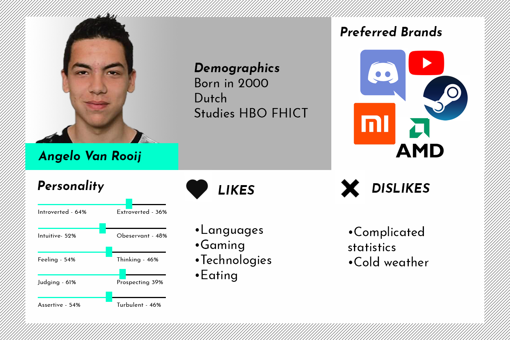

Learning Outcome
A. Ability to develop a consistent and distinctive brand strategy and visual
identity based on target audience analysis.
B. Ability to create media products for your client by using experiments,
iterations
and examples from the professional field.
Target Audience
Sprint 0
When it comes to branding a musician, it's imperative to know who the 'target audience' is, and
how to reach them. In order to get the general idea of the target audience, 'personas' can be
used to visualize the target audience.
In this assignment i have made a persona of one of my groupmates as an exercise to visualize a
target audience.

Feedback
No feedback provided yet.
Customer Journey Map
Sprint 1
The customer journey is the complete
sum of experiences that customers go through when interacting with a company and or a brand. In
this case, an artist.
In this assignment i have made a customer journey map of the client.

The CJM above describes the states of how the customer would react to the artist, in more detail:
Awareness
In the awareness phase the customer would have been aware of the artist by
social means.
Interest
The customer would have grown interest on the artist and would have decided to
see
more of the artist content.
Consideration
In this phase, the customer would have to consider whether or not to invest
more in
this artist depending each to individual taste and if the customer likes the artist enough they
probably would want to see them first hand.
Purchase
The customer would have been intrigued of the artist and would decide to buy
the
merchandise of the artist.
Advocacy
The customer would have become a fan and shares the artist music to friends and
relatives.
Feedback
No feedback provided yet.
Brand-, Market- and Competitive Analysis
Sprint 1
Brand Analysis
Our client is passionate about her career as an artist regardless her experince as a fresh new artist. Aisha's vision is to spread happiness and good feelings through her music and caters to a fairly young audience.
Market Analysis
The most prevalent platform our client has is her social media especially her Instagram page. She mostly distribute her content through it and her audience could react to her feeds quickly.
Competitive Analysis
As a group we did an online research to compare on how would our client compete with other artists with a similar target audience.
Feedback
No feedback provided yet.